Day 2: Global distribution of biodiversity
2023-06-27
Quiz
- Visit https://gosocrative.com and enter room name NITTA9359, or scan the barcode:

What is biodiversity?
- The different kinds of life that occur on our planet
To understand biodiversity, we need to document it (describe where it occurs)
How can we count (quantify) life?
Population size (abundance)
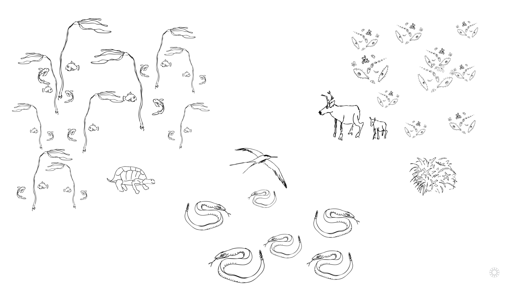
The number of individuals belonging to a species 個体数
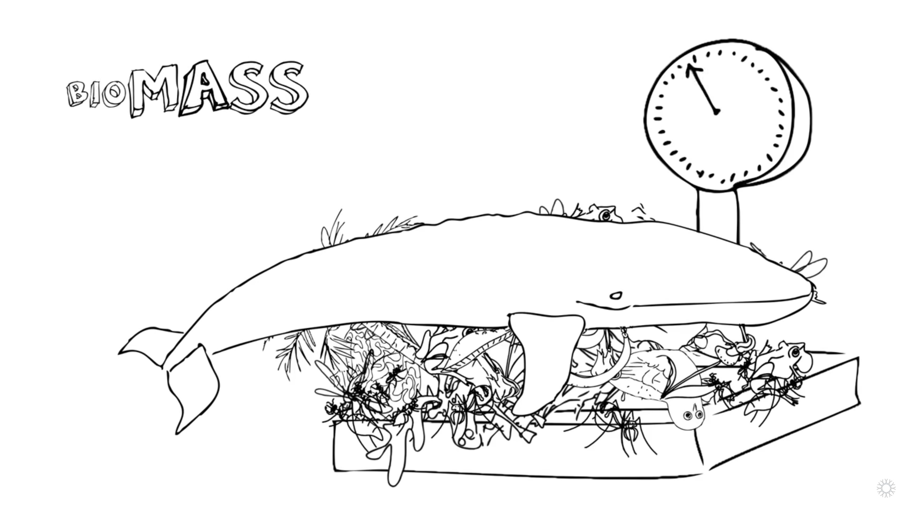
The total mass of organisms 生物量
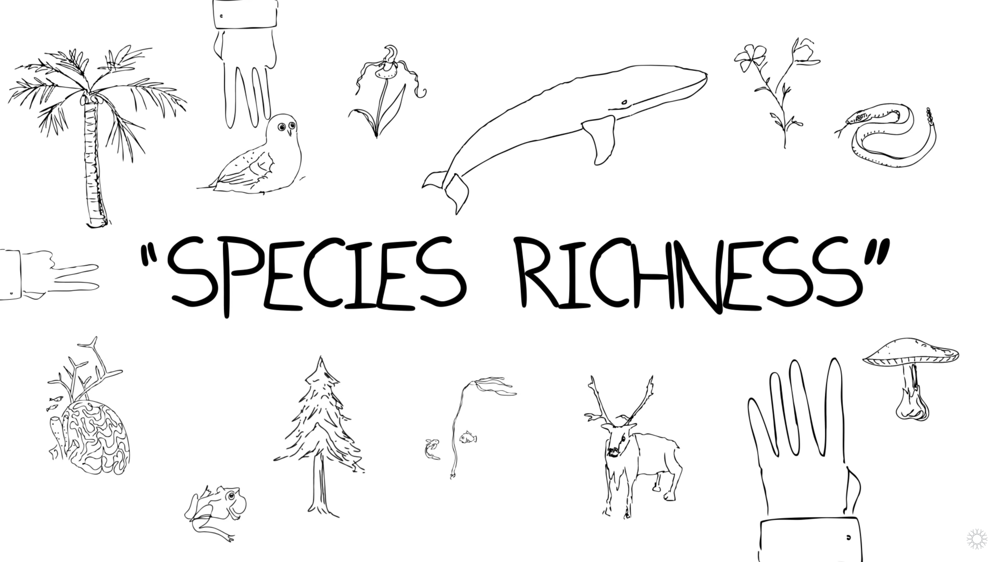
The number of species 種数
Counting life
Population size (abundance): The number of individuals belonging to a species 個体数
Biomass: The total mass of organisms 生物量
Richness: The number of species 種数
Activity: Which is more diverse?
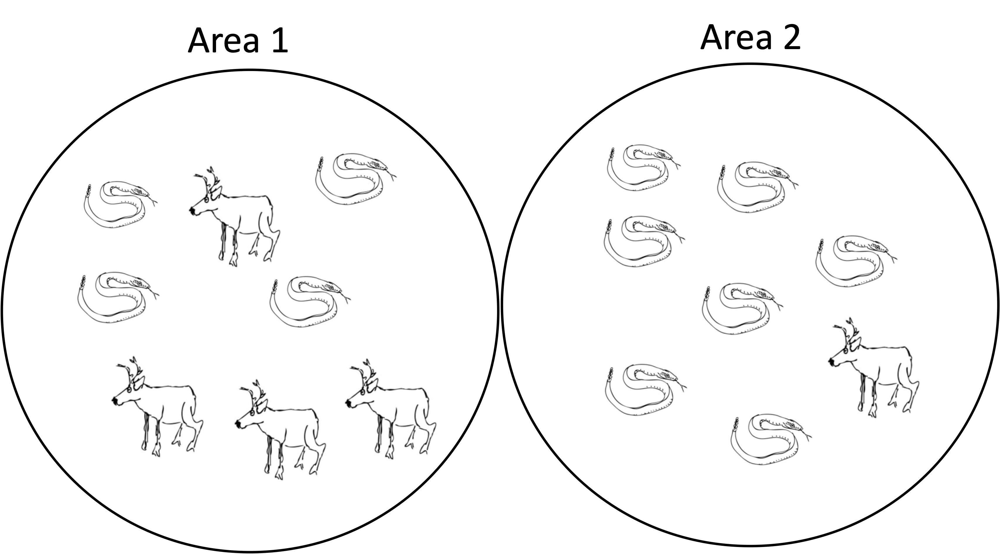
Activity: Which is more diverse?
- Visit https://gosocrative.com and enter room name NITTA9359, or scan the barcode:
Species richness is often used, but is not the only way to measure biodiversity
There is no single definition of diversity.
How you measure it depends on your goal and the data available
Species richness is unevenly distributed
Some areas have many species, others have few.
Latitudinal species gradient
The number of species increases going from the poles to the equator
- latitude = 緯度
- equator = 赤道
Latitudinal species gradient

https://en.wikipedia.org/, https://www.worldatlas.com
Latitudinal species gradient
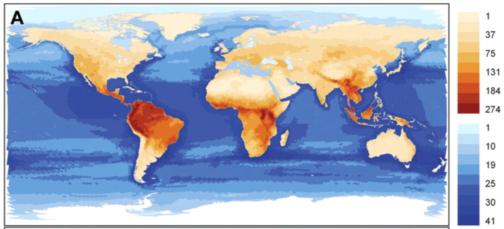
Schipper et al. 2008, Science 225–230
There are many factors that determine richness
- Climate 気候
- Biotic interactions 生物間相互作用
- Evolution 進化
- Humans
These affect ranges of individual species, and species richness
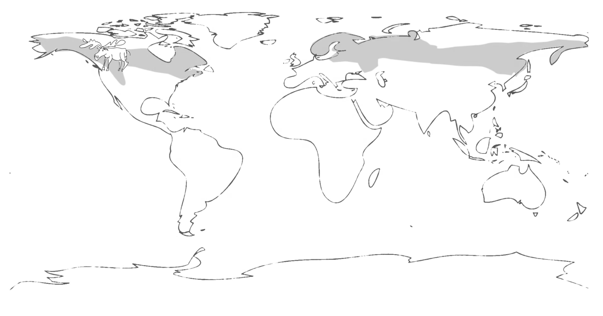
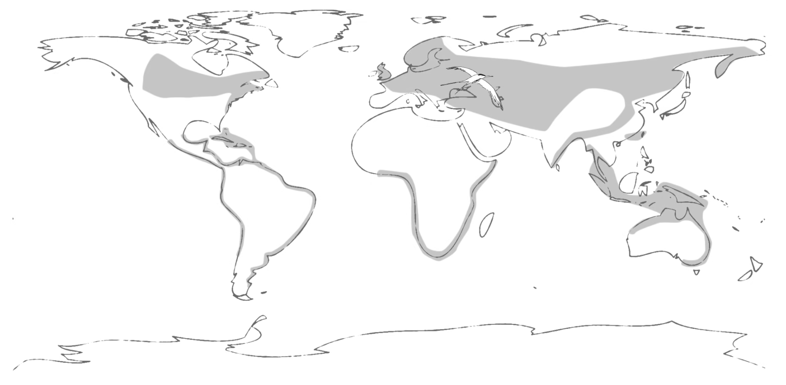
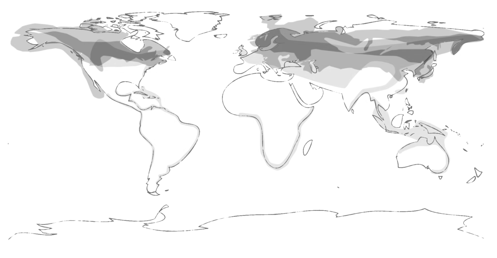
Climate
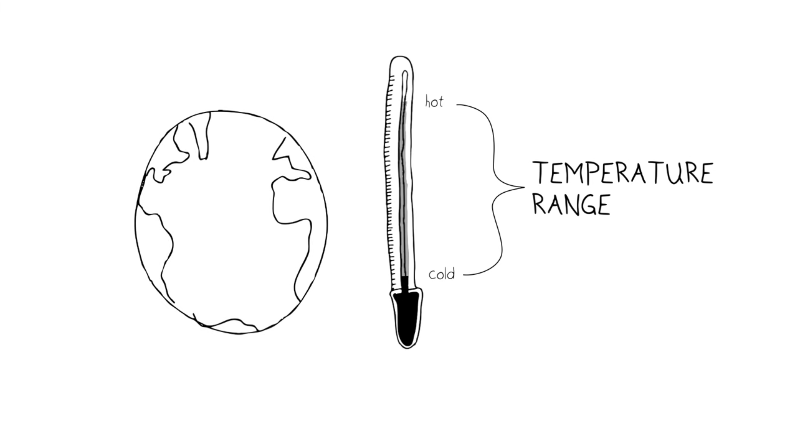
Climate
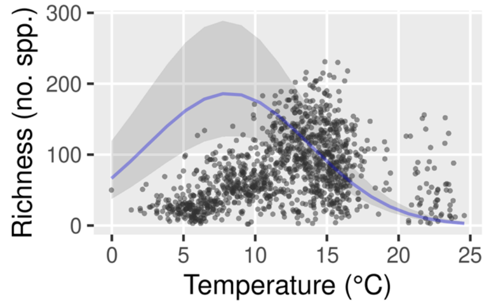
Biotic interactions
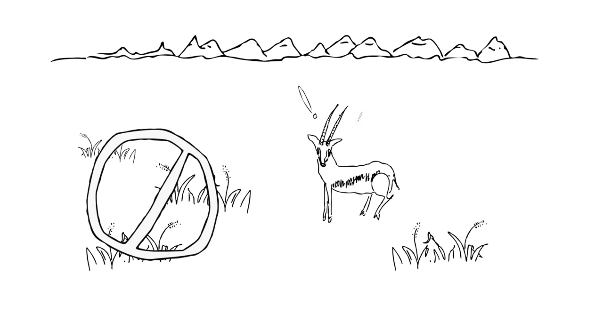
Evolution
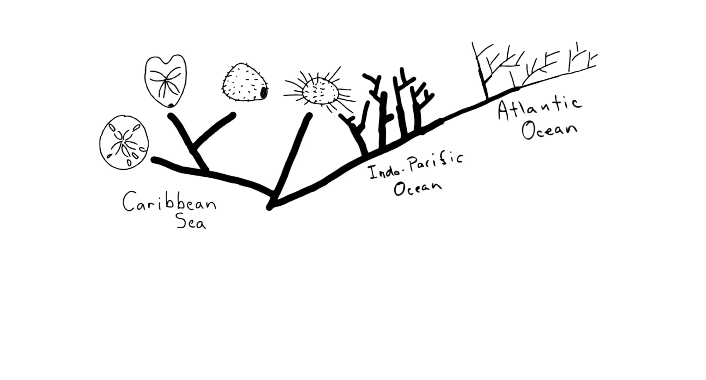
Evolution
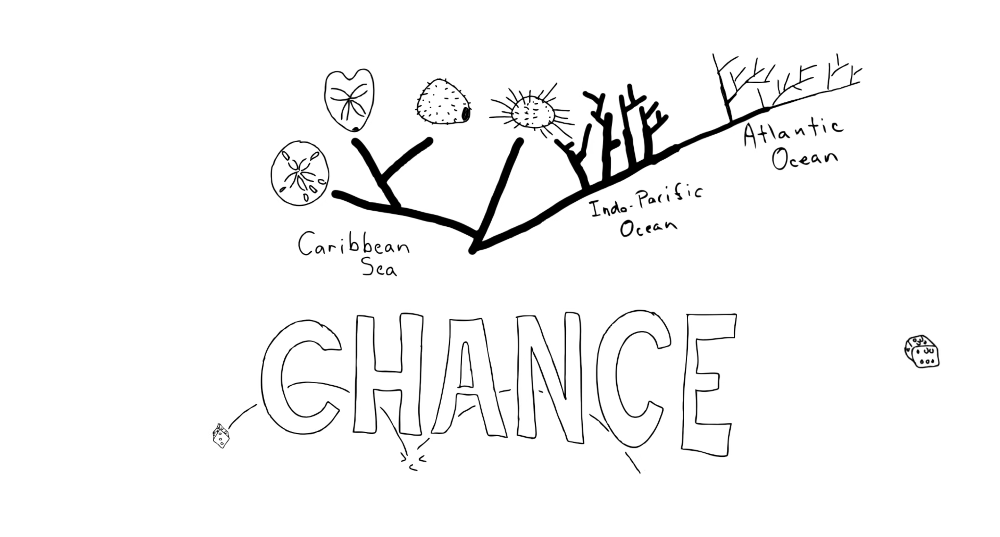
Evolution
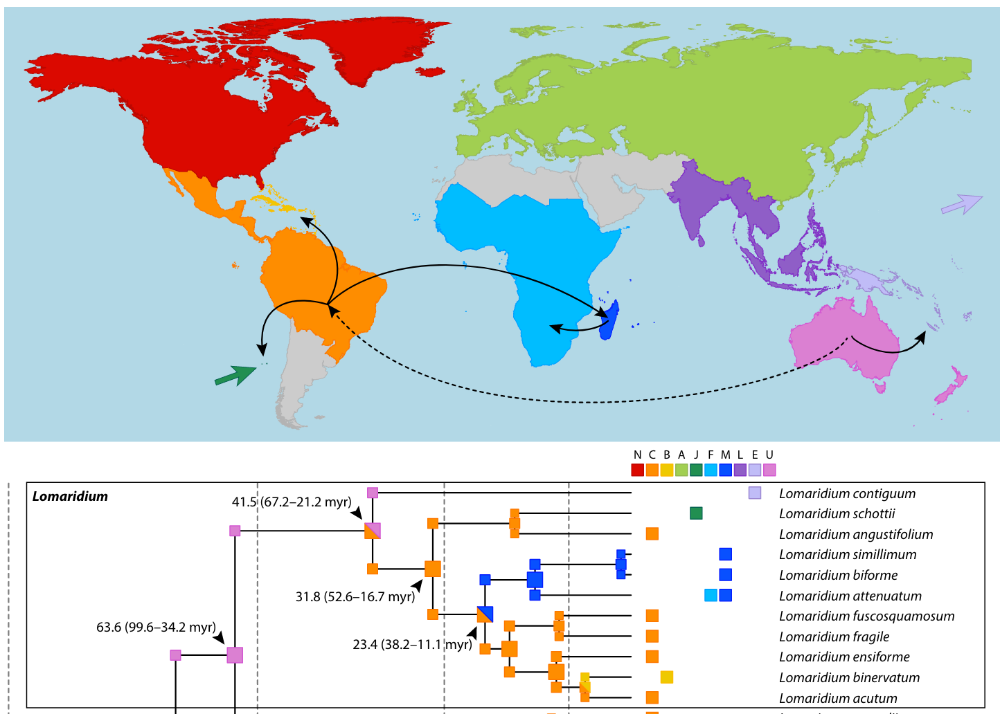
Vicent et al. Taxon 66, 2017
Hotspots are areas of exceptionally high richness
Hotspots have high richness and are in danger: these are the areas that we should focus on conserving
- 種の数が極めて多い
- すでにダメージを受けている
35 Global Biodiversity Hotspots

Activity: How do you experience biodiversity?
In your group, discuss:
Where do you see/experience areas of high biodiversity?
Where do you see/experience areas of low biodiversity?
Why do you think there is a difference?
One person per group answer on Socrative
Activity: Join on Socrative
- Visit https://gosocrative.com and enter room name NITTA9359, or scan the barcode:
Activity: Find your team name
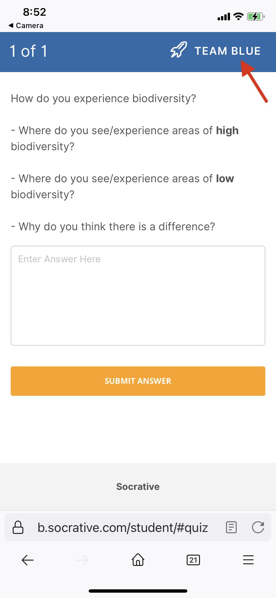
Activity: Team Seating Chart
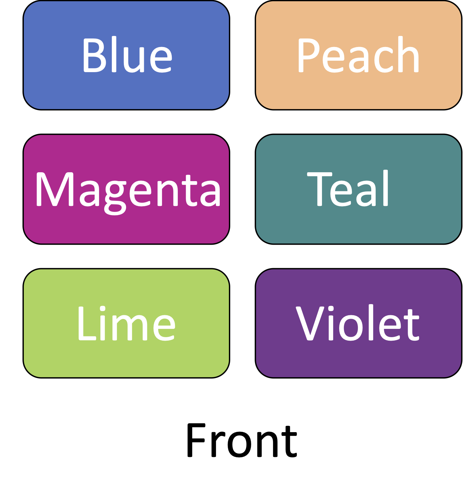
What are species anyways?
All of our discussion of biodiversity uses species as a unit
(単位)
- But what are species?
Activity: What are species anyways?
In your group, discuss:
- What is a species?
One person per group answer on Socrative
Activity: Join on Socrative
- Visit https://gosocrative.com and enter room name NITTA9359, or scan the barcode:
Activity: Find your team name
Activity: Team Seating Chart
Species concepts
There is no one right answer to the question, “What are species?”
Instead, there are different species concepts
- 種概念、「種」の定義
Biological Species Concept (BSC)
生物学的種概念
- According to the BSC, species are groups of individuals that can interbreed with each other, but not other species
- interbreed = 繁殖する
- Appearance does not matter
- 見た目は関係ない
Western meadowlark vs. Eastern meadowlark (different species)

https://evolution.berkeley.edu/biological-species-concept/
Ant castes (same species)

https://evolution.berkeley.edu/biological-species-concept/
Horse and donkey (different species)

Horse うま Donkey ロバ Mule ラバ
https://www.chegg.com/learn/topic/biological-species-concept
Why the BSC?
Members of the same species can exchange genes
Members of different species cannot
Member of the same species are an evolutionary unit
Speciation

https://evolution.berkeley.edu/
Why measure biodiversity using species?
. . .
Conceptually simple
According to the BSC, we are preserving evolutionary units
Are there any disadvantages to measuring biodiversity with species richness?
. . .
Does not account for evolutionary history
The BSC is difficult to test experimentally
The BSC does not apply to all organisms